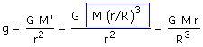
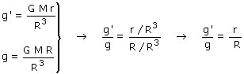
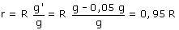

b) El campo a una profundidad p bajo la superficie, es igual al que habría en la superficie de un subplaneta de radio r = R - p. Es decir: sería el campo que crearía la masa M' de este subplaneta concentrada puntualmente en el centro  Aplicamos la formula para calcular la gravedad dentro del planeta (g') y en la superficie (g):  Observa que, dentro del planeta, el valor de la gravedad es directamente proporcional a la distancia al centro del mismo  La profundidad desde la superficie terrestre será: p = R - r = R - 0.95 R = 0.05·6370 km = 319 km |